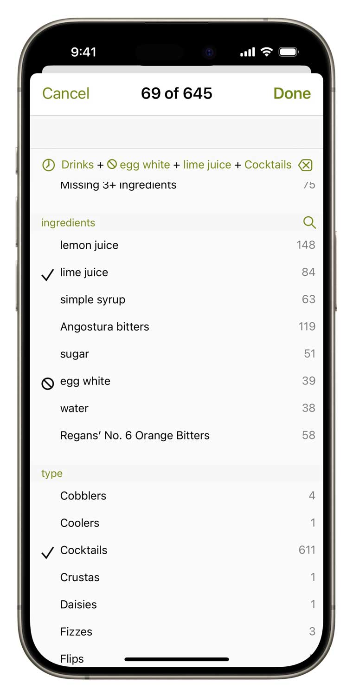
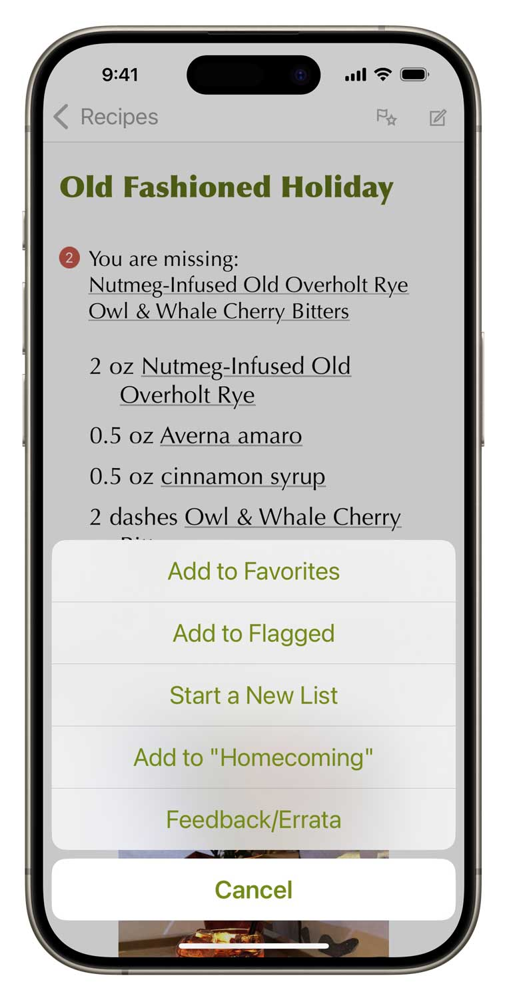

This is the official app for gaz regan’s 101 Best New Cocktails, an almanac compiling five years (2011-2015) of compelling ideas in mixed drinks from bartenders around the world during the peak of the Cocktail Renaissance.
★★★★★ by amorelli, Jan 26, 2017
This is a great resource for fun new stuff to try out. Don't expect to make all the recipes with a basic bar (although you'll be able to make quite a few), but it's easy to adapt the concepts if you're willing the experiment.
The design of this suite of apps is perfectly suited to the at-home cocktail enthusiast. Input your ingredients once, sync to all other apps (easily authenticating via 1Password support), flag recipes, and drink lovely cocktails. I'm a particular fan of flagging recipes I want to try because the list of flagged recipes shows you results from all installed apps in the suite. Very easy to find a good one to try (likewise with favorites).
All over the map, literally and figuratively
Herein are over 500 novel drink recipes from bartenders all over the world, both famous and previously un-sung. Most of these drinks are straightforward enough—a few are daunting projects—but the diversity and breadth of ingredients employed across these recipes is breathtaking.
Easy-to-use power
Search by name or ingredient just like in your address book. Surf through recipes and ingredients by tapping hyperlinks.
More surgical questions are just a few taps away: filter all the recipes by any combination of ingredients and keywords.
Ingredient aware
Our drink recipe apps have the smartest ingredient system. Simply check off what you have and the app will tell you which drinks you can make, including legit substitions.
★★★★★ by gpshack, Jan 31, 2015
Har länge följt Gaz blogg och blandat många 101 bästa. Den här appen samlar recepten och har en utmärkt funktion för att föreslå vilka man kan blanda utifrån ingredienser man har hemma - och föreslår alternativ till de udda spritmärken som gärna förekommer i de framstående bartendernas egna recept. Köp om du gillar nya recept och inspiration i glaset!
[Have long followed Gaz's blog and mixed many 101 best. This app collects the recipes and has an excellent function to suggest which ones to mix based on ingredients you have at home - and suggests alternatives to the odd liquor brands that like to appear in the famous bartenders' own recipes. Buy if you like new recipes and inspiration in the glass!]
Simple tools of great utility
Flag recipes you want to try, populate your favorites list, create a new list for planning the drinks for your next party. Add your own notes to any recipe.
Part of a talented family
101 Best New Cocktails inter-operates with its seven sibling recipes apps that you can add at any time.

Set up your free sync account and all these apps can share your ingredient inventory, lists and journal notes. In the same manner, you can have Total Tiki on both your iPhone and iPad, and they’ll stay in sync. You can even access your sync data with a web browser.